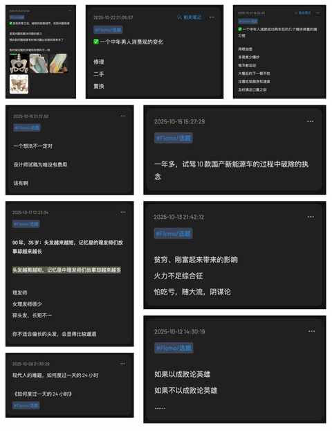
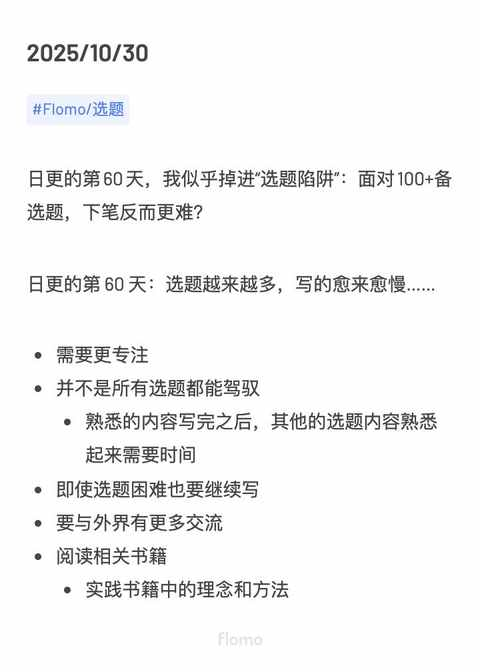
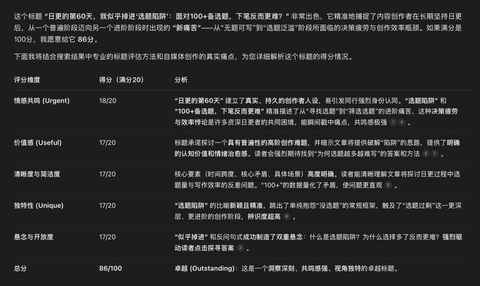
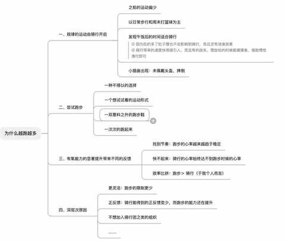
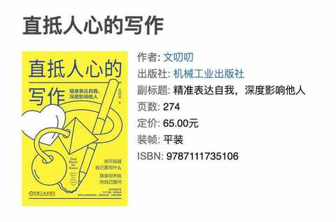
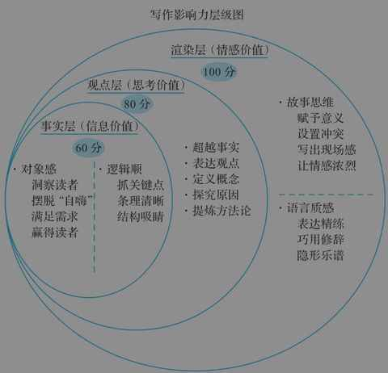
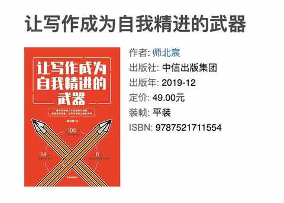
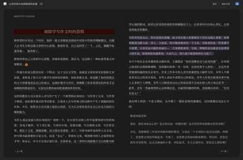
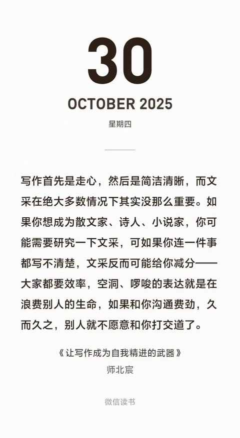

日更的第60天，我似乎掉进“选题陷阱”：面对500+备选题，下笔反而更难？！
一、选题越多反而写得越慢
这是近期频繁出现的问题，是一种该来的总会来的感觉。 最突出的表现是：
每天决定写哪个选题很费时间！
因为目标不明确，极其需要感觉和时间的沉淀，无法做到直接看到一个选题就开始。
决定写什么选题后，能快速拟定好标题，即使是我现在完全不梳理脑图的情况下，边想边写也不会觉得麻烦。
每天我都能在 flomo 里面新增上几个选题，现在积累的选题已经有500+，但能写成文章的比例很低。
很多选题只是突然的想法，然后及时记录了，日常并没有去再做深入的思考。

二、继续写
由于上午去了健身房，今天写文章的时间便顺延到了晚饭后。
洗好碗之后打开电脑依然是和昨天一样的情况，在反复遍历选题和公众号的推荐内容之后决定：要不就写这个啦，正好最近都在纠结选题的事情。

快速在 flomo 中梳理内容，结合腾讯元宝的标题评分，定好标题之后便开始写。

不能因为下笔难而中断日更，加上今天还有 41 天才到 100 天呢。
和跑步一样，刚开始跑的时候很累人，跑个几周状态便能大大改善，会有明显的进步，很难不觉得自己挺厉害的。
但是当想稍微提速或再跑多点距离的时候，这种累的感受反而比刚开始跑的时候更强烈，更需要意志力的介入，也更需要了解一些常识和他人的经验。
三、接下来会做的调整
1️⃣ 做好前期准备
每天遍历选题的时候，把能继续补充细节的选题进行信息的补充和延展

2️⃣ 阅读相关书籍
本周先把这本《直抵人心的写作》读完。

被作者的核心理念和方法论所吸引，她所倡导的文章风格也是我比较偏好的类型。

上个月看的是这本《让写作成为自我精进的武器》。



3️⃣ 必须更专注
可能大部分现代人都会遇到一个情况：能保持专注做一件事的时间越来越短！
例如：
- 在看电视的时候同时玩手机
- 在走路的时候看手机
- 甚至我越来越多看到有人在骑共享单车的时候看手机
- ……
表面上似乎是因为手机太好玩了，导致我们很难专注，实际上是我们忽视了专注力的重要性！
我在写文章的时候，经常写个15 分钟去看看以往文章的数据和留言，再刷刷微博之类的，做这些对正在写的文章毫无益处的事情。
要把事情做好，进而逐步提效，长时间专注是必要条件！
4️⃣ 与他人多交流互动
回溯之前阅读量比较高的一些文章，都是在和朋友及网友的交流互动后总结出来的。
每个人的视角、理念、状态都不一样，针对同一个问题都有属于自己的答案，有时候即使观点相同，但藏在背后的决策逻辑都不一样。
能更多启发到人的往往并不是观点本身，而是藏在背后的逻辑！
5️⃣ 坚持多听多看多体验
如果我不减肥，肯定无法总结减肥的经验和心得。
如果我不运动，必然写不出关于跑步与骑行的内容。
如果我不自驾，便无法细细感受祖国的大好河山。
……
四、结语
接下来还有两场马拉松比赛需要跑，在每天在坚持日更的同时，我也在保持着每周破五休二的节奏。
在跑步时感觉最累的时刻，恰恰是身体正在突破极限的信号。写文章亦是如此。
我深知，眼下这份下笔困境与选择的纠结，或许正是我写作能力即将突破下一个瓶颈的征兆。
与其焦虑，不如像对待跑步后的酸痛一样，先接纳然后积极应对，继续跑下去。
近期文章
中年减肥成功2年后，才发现维持体重靠的不是毅力，而是这5个微习惯
一个中年男人消费观的 3 个转变
8年驾龄复盘：新手期的每一次手忙脚乱，都成了现在我安全驾驶的“肌肉记忆”
一个中年人的2025年桐庐半马赛后复盘：我的 5 个收获
桐庐半马前24小时：安于日常，拥抱期待
一个中年男人的140次发文，换来第一篇的10万+
为什么说放弃Apple Watch很容易，而真正考验人的是下一块智能手表的选择？
运动后总酸痛？这4个家常小物件，是放松肌肉的“隐形神器”
我的电车购买逻辑：用100kWh大电池的“确定性”，替代三电优化的“不确定性”
从前，有一个笨小孩，他的武器叫“笨功夫”